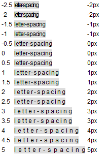
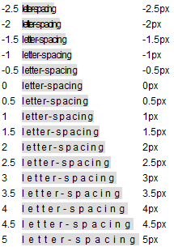
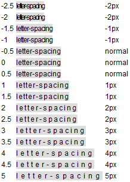

RT1010: 仅 Firefox 支持小数数值的 'letter-spacing' 特性
作者：陆远
标准参考
根据 W3C CSS 2.1 规范中的描述，'letter-spacing' 特性指定了文本字符间的间距特性。其取值的含义如下：
- normal：指定间距是当前字体的常规间距。这个值允许用户端适当的改变字符间距以对齐文本；
- <length>：这个值指出在除缺省的字符间距外额外的字符间距。数值可以为负数，但是可能有与实现相关的限制。用户端不能因对齐文本而进一步增加或减少字符间距。
关于 'letter-spacing' 特性的详细信息，请参照 CSS 2.1 规范 16.4 Letter and word spacing: the 'letter-spacing' and 'word-spacing' properties 中的内容。
问题描述
Firefox 中支持 'letter-spacing' 特性以 px 为单位时的小数数值。
造成的影响
各浏览器对 'letter-spacing' 特性以 px 为单位时的小数数值支持不同会造成应用了该特性的文本的宽度产生差异，进而可能影响到布局。
受影响的浏览器
| Firefox |
|---|
问题分析
通过规范原文可知，字符间距的算法与用户端相关。W3C 并未明确规定具体算法。
分析以下代码：
<html>
<head>
<style>
* { font:12px Arial; }
</style>
</head>
<body>
<table>
<script>
for (var i = -5; i <= 10; i++) {
document.write('<tr><td id="a' + (i / 2) + '"></td><td><span id="s' + (i / 2) + '" style="background:#DDD;letter-spacing:' + (i / 2) + 'px">letter-spacing</span></td><td id="c' + (i / 2) + '"></td></tr>');
}
window.onload = function() {
function $(id) { return document.getElementById(id); }
if (!window.getComputedStyle) {
window.getComputedStyle = function($target){
return $target.currentStyle;
};
}
for (var i = -5; i <= 10; i++) {
document.getElementById("a" + (i / 2)).innerHTML = (i / 2);
document.getElementById("c" + (i / 2)).innerHTML = getComputedStyle(document.getElementById("s" + (i / 2))).letterSpacing;
}
}
</script>
</table>
</body>
</html>
上面代码创建了一系列的设置了 'letter-spacing' 特性的 SPAN 元素，其中 'letter-spacing' 的取值从 -3px 至 5px 不等，包括小数数值（如 1.5px）。并获得这些 SPAN 元素计算后的 'letter-spacing' 的值。
这段代码在不同浏览器中运行结果如下：
| IE6 IE7 IE8(Q) Opera | IE8(S) | Firefox | Chrome Safari |
|---|---|---|---|
|  |  |
 |  |
可见，对于以 px 为单位的 'letter-spacing' 特性的值：
- 在 IE6 IE7 IE8(Q) Chrome Safari Opera 中，只支持整数，若值为小数，则会将其小数点后的部分直接舍弃，如 1.5px 变为 1px、-5px 变为 -2px；
- 在 IE8(S) 中，同样只支持整数，若为小数，则会将其进出去正负号的纯数字部分做四舍五入处理，如 1.49px 变为 1px、-2.51px 变为 -3px；
- 在 Firefox 中，支持小数数值，且成线性规律。
值得注意的是，px 是相对于浏览设备的像素点，通常应该为整数值。 Firefox 对小数数值的 px 的支持可以看做是对 'letter-spacing' 特性的扩展。
解决方案
避免在使用 px 单位时为 'letter-spacing' 特性设置小数数值。
参见
知识库
相关问题
测试环境
| 操作系统版本: | Windows 7 Ultimate build 7600 |
|---|---|
| 浏览器版本: |
IE6 IE7 IE8 Firefox 3.6.8 Chrome 6.0.472.11 dev Safari 5.0.1 Opera 10.60 |
| 测试页面: | firefox_letter_spacing.html |
| 本文更新时间: | 2010-08-11 |
关键字
Firefox letter-spacing 文字 间距 小数 decimal